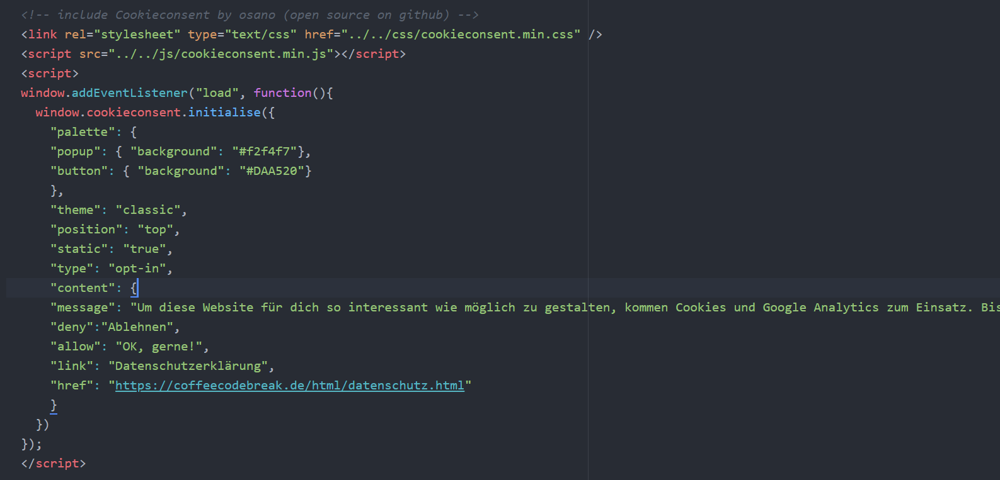
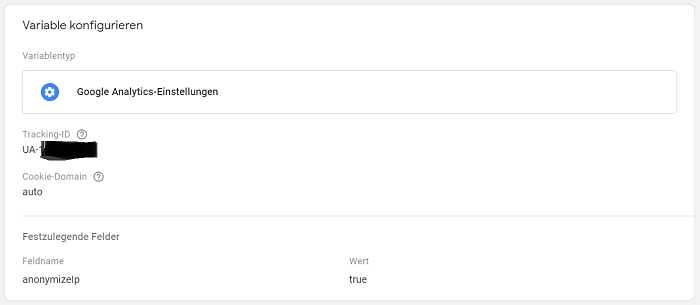

Weshalb es mit Google Analytics nicht getan ist
Google Analytics ist ein ziemlich mächtiges Analyseinstrument von Google, mit dem du den Datenverkehr auf deinen Webseiten tracken und analysieren kannst. Ich dachte mir "super, so kann ich sehen, ob meine Blogposts gelesen werden und welche mehr oder weniger beliebt sind". Deshalb hatte ich beschlossen, Google Analytics aufzusetzen. Und das Einrichten an sich ist wirklich kein Problem. Dazu finden sich online mehr als genügend gute Anleitungen und Tutorials.Doch leider ist es damit nicht getan. Denn ohne deine Einwilligung darf ich überhaupt nicht auswerten, was du so auf meiner Seite getrieben hast. Insbesondere in Deutschland gibt es ganz schön viel bzgl. Datenschutz zu beachten. Und das nicht nur, wenn man Google Analytics einsetzt, sondern allgemein wenn man eine Webseite betreibt.
Da meine Seite ganz neu ist und für Suchmaschinen (und damit höchstwahrscheinlich auch für dich) bis vor einigen Tagen noch nicht einmal existierte, hatte ich mir bisher kaum Gedanken über diese Themen gemacht. Irgendwann muss aber jeder dafür sorgen, auf der sicheren Seite zu sein. Und das Einrichten von Google Analytics war für mich ein (zwingender) Trigger, mich damit zu beschäftigen.
Ich stand also vor zwei Herausforderungen: zum einen musste ich herausfinden, was ich überhaupt benötige und beachten muss und zum anderen musste eine technische Lösung dafür her. Ich bin natürlich keine Juristin und wenn du detaillierte Informationen benötigst, solltest du dich immer an einen Experten wenden. Das ist auch definitiv kein Artikel über alle rechtlichen Aspekte, die du beachten musst, wenn du eine Webseite betreibst. Dafür gibt es viel zu viele verschiedene Fälle und Arten von Webseiten.
Was aber sicher ist: um dein Verhalten auf meiner Webseite mit Google Analytics auszuwerten benötige ich deine Erlaubnis. Diese Erlaubnis muss ich mir einholen, wenn du meine Webseite in deinem Browser aufrufst. Und zwar über ein Cookie-Banner (“Cookie Consent”). Außerdem muss ich dir natürlich auch die Möglichkeit geben, das Ganze abzulehnen.
Naiverweise hatte ich angenommen, dass sei eine Sache, die sich in zwei Stunden erledigen lässt. Und insbesondere was die technische Seite betrifft, hatte ich erwartet, dass es - wie für fast alles andere auch - schnelle, einfache Lösungen und genügend Tutorials gibt. Schlussendlich musste ich mir aber mühsam die einzelnen Puzzleteile zusammensuchen. Deshalb möchte ich mit dir teilen, was am Ende meine Lösung für das Problem war. Das ist sicherlich nicht die einzige Lösung, aber eine, die für mich am Ende super funktioniert hat. Was genau du für deine Webseite benötigst, hängt wieder ganz von deiner Situation ab.
Kurz zu meiner Situation: ich habe meine Seite selbst programmiert und kein Content Management System wie WordPress oder andere Vorlagen verwendet. Das liegt daran, dass ich meine Webseite zum Programmieren üben und Technologien ausprobieren benutze. Wenn du deine Webseite über WordPress etc. verwaltest, gibt es natürlich Plugins, mit denen sich das Thema Cookies viel einfacher erledigen lässt. In meinem Fall musste ich aber eine Lösung für meinen rohen Code finden.
Mein Cookie-Plan
Nach unzähligen Artikeln, Anleitungen und Youtube-Videos hatte ich mir schließlich einen Plan erstellt:- Cookie-Banner implementieren
- Google Analytics einrichten
- Google Tag Manager einrichten (und Google Analytics als Tag einbinden)
- Cookie-Banner mit Google Tag Manager verbinden
- Testen, ob es funktioniert
Los geht’s! :)
1. Cookie-Banner implementieren
Du kennst sie sicherlich - die Cookie-Banner, die dir auf so gut wie jeder Webseite angezeigt werden, die du besuchst.Es gibt die verschiedensten Arten von Cookie-Bannern. Manche informieren dich lediglich darüber, dass du dem Setzen von Cookies zustimmst, wenn du weiterhin auf dieser Seite bleibst. Diese Variante ist nicht wirklich fair und auch nicht ganz legal.
Du musst nämlich selbst darüber entscheiden können, ob du Cookies zulassen möchtest oder nicht. Und am besten, indem das Ablehnen der Cookies nicht irgendwo versteckt und über fünf Klicks erreichbar ist. Es sollte dir als gleichwertige Option wie das Erlauben der Cookies angeboten werden, damit du aktiv entscheiden kannst, ob du Cookies zulassen möchtest oder nicht. (Und zwar ohne, dass “Cookies zulassen” wie bei vielen Seiten schon vorausgewählt ist.) Diese Variante wird als “Opt-In” bezeichnet. Da sich die Rechtslage ändern kann und ich, wie gesagt, keine Juristin bin, informiere dich auf jeden Fall immer selbst noch einmal über die aktuellen Vorschriften.
Wenn du dir zum Beispiel mein Cookie-Banner anschaust, bietet es dir direkt auf den ersten Blick die beiden Optionen “Ablehnen” und “Okay, gerne” an. Du musst dich aktiv für eine der beiden Optionen entscheiden. Das Banner kannst du außerdem jederzeit erneut aufrufen und deine Entscheidung ändern. Dazu habe ich oben links über meinem Logo einen kleinen hellgrauen “Cookie Optionen”-Button gesetzt. Wenn du auf diesen klickst, erscheint das Banner erneut.
Ein kleiner Exkurs zum Verständnis: Cookies speichern Daten in deinem Browser. Wenn du beispielsweise in einem Onlineshop unterwegs bist und Artikel in deinen Warenkorb legst, kann dieser über Cookies gespeichert werden. Cookies können auch zum Tracking eingesetzt werden. Zum Beispiel können sie Informationen dazu speichern, wie lang du auf welchen Seiten warst, nach welchen Begriffen du gesucht hast usw. Das löst natürlich immer wieder breite Diskussionen zum Datenschutz und neue Urteile aus.
Da ich den gesamten Cookie-Code nicht selbst schreiben wollte, habe ich nach kostenlosen Lösungen gesucht, die ich in meinen Code integrieren kann. Es gibt ein paar Optionen - allerdings bieten diese meist keine optischen Konfigurationsmöglichkeiten für das Cookie-Banner an bzw. nur als kostenpflichtiges Upgrade. Außerdem liegt der eigentliche Code dann meistens dort auf den Servern, was datenschutztechnisch wohl auch umstritten ist.
Nach einiger Suche habe ich eine sehr beliebte Open Source Lösung gefunden, die auf Github liegt: CookieConsent von Osano. Auf der Osano-Webseite gibt es sogar einen Konfigurator für dein Cookie-Banner, der für dich den gewünschten Code generiert, den du dann in deine HTML-Dateien einfügst. So musst du nicht in dem Code von CookieConsent herumspielen. (Der Konfigurator öffnet sich, wenn du auf “Start Coding” klickst.) Wähle hier bei “Compliance Type” die “Ask users to opt INTO cookies”-Variante, um ein Opt-In-Banner zu erstellen.
Der CookieConsent-Code lässt sich - wie bei Github beschrieben - über verschiedene Wege in deinen eigenen Code einbinden. Der Osano Konfigurator bietet dir dazu direkt unter “Copy the Code” einen CSS-Link an, den du in den head deiner HTML-Dateien einbinden kannst. Da ich wollte, dass der Code bei mir liegt, habe ich den benötigten JavaScript- und CSS-Code kopiert und als separate Dateien in meiner Ordnerstruktur abgelegt. Hier findest du den min.js und den min.css Code.
Anstatt des CSS-Links von Osano musst du dann jeweils den Ordnerpfad zu den Dateien angeben. Zusammen mit dem restlichen Code aus dem Konfigurator sieht das Ganze bei mir so aus: (ich habe alles, was ich für mein Cookie-Banner benötige, in einem Stück in den head meiner HTML-Dateien gesetzt)

Übrigens: in der min.css-Datei findest du unter anderem das Styling für den revoke-Button (die Klasse heißt “cc-revoke”). Das ist der Button, der bei mir oben links über dem Logo sitzt und über den du das Cookie-Banner jederzeit erneut aufrufen kannst. Wenn du dich mit CSS etwas auskennst, kannst du diesen in min.css optisch anpassen.
2. Google Analytics einrichten
Nachdem ich es endlich geschafft hatte, ein Cookie-Banner nach meinen Vorstellungen in meine Webseite einzubauen, musste ich dafür sorgen, dass es auch funktioniert. Der ganze Berg Arbeit hatte ja damit begonnen, dass ich Google Analytics einsetzen wollte. Also war der nächste Schritt, Google Analytics aufzusetzen.Wie ich es oben bereits erwähnt habe, ist das recht einfach. Grob gesagt: du gehst auf analytics.google.com, meldest dich über deinen Google-Account an (oder erstellst einen neuen, solltest du noch keinen haben), erstellst ein Analytics-Konto und für deine Webseite ein neues “Property”. Dazu gibt es wirklich tolle Youtube-Tutorials mit vielen sinnvollen Tipps und Hinweisen.
Google Analytics bietet dir einen Tracking-Code an, den du in deine HTML-Dateien einbinden kannst. Ein wichtiger Hinweis hierzu: falls du das machst, musst du unbedingt eine IP-Anonymisierung vornehmen, indem du ein anonymizeIp in den Code einbaust! Auch dazu gibt es viele Anleitungen.
Wenn du den Google Tag Manager benutzt, musst du den Tracking Code nicht direkt verwenden. Da ich den Tracking-Code von Google-Analytics nicht in meinen Code einbinden, sondern stattdessen den Tag Manager benutzen wollte, war ich mit dem Erstellen meiner Webseite als Property hier erst einmal fertig.
3. Google Tag Manager einrichten
Zusammenfassend hatte ich bis dahin ein Cookie-Banner und ein Konto mit meiner Webseite als Property in Google-Analytics. Das alleine würde mir aber wenig dabei helfen, auf Basis der Entscheidung meiner Seitenbesucher Cookies bzw. Google Analytics zu aktivieren oder nicht. Ich musste es also irgendwie schaffen, Google Analytics mitzuteilen, dass es loslegen soll oder nicht - je nachdem, ob du auf meinem Cookie-Banner “Ablehnen” oder “Okay, gerne” angeklickt hast.Bei meiner Recherche hatte ich herausgefunden, dass der Google Tag Manager dazu eine recht komfortable Lösung bietet. Der Google Tag Manager ist eine Art “Vermittler”, der für meine Webseite regeln kann, ob gewisse Tags, wie zum Beispiel Google Analytics, unter bestimmten Bedingungen aktiviert werden sollen oder nicht. Das klang für mich ganz sinnvoll. Deshalb habe ich im nächsten Schritt den Google Tag Manager eingerichtet. Auch hierfür findest du online wieder wirklich gutes Material.
Im Großen und Ganzen habe ich ein Konto und darin einen Container für meine Webseite erstellt und in diesen Container mein Google Analytics Tag gesetzt. Vergiss hier nicht, den Code, den der Google Tag Manager für deinen Container generiert, in den body deiner HTML-Dateien zu setzen. So verbindest du den Tag Manager mit deiner Webseite.

Da ich ja nicht den Google Analytics Tracking Code benutzt und dort die Anonymisierung deiner IP-Adresse vorgenommen hatte, musste ich das hier noch tun. Dazu kann man im Tag Manager eine Variable anlegen, für die man die Tracking-ID der Webseite eingibt (findest du bei Google Analytics), als Feldname “anonymizeIp” wählt und den Wert auf “true” setzt. Das sieht dann so aus:

Das bedeutet, wenn Google Analytics auf meiner Webseite trackt, welche Blogposts du zum Beispiel angeklickt hast oder wie lang du auf einer Seite warst, werden die letzten acht Stellen deiner IP-Adresse verschlüsselt. So lässt sich nicht mehr nachvollziehen, welcher Computer genau auf meiner Seite unterwegs war und das ist auch absolut gut so. In Google Analytics sehe ich in meiner Auswertung dann zum Beispiel, dass gestern fünf Leute (oder genauer gesagt Geräte) aus dem Raum München auf meiner Webseite waren und welche Blogposts sie wie lang geöffnet hatten.
Nun hatte ich es fast geschafft. Mir fehlte nur noch die Verbindung zwischen meinem Cookie-Banner und dem Google Tag Manager. Und wie ich die hergestellt habe, erkläre ich dir noch kurz im nächsten Abschnitt.
4. Cookie-Banner mit Google Tag Manager verbinden
Wenn du in meinem Cookie-Banner auf “Ablehnen” oder “Okay, gerne” klickst, wird der Status von dem CookieConsent-Code-Schnipsel, der überprüft, wie du dich entschieden hast (“cookieconsent_status”) auf allow oder deny gesetzt. Und genau diese Information benötigt mein Google Tag Manager, um Google Analytics zu sagen, dass es starten darf oder nicht.Damit der Google Tag Manager die nötigen Informationen erhält und verarbeiten kann, habe ich dort für meinen CoffeeCodeBreak-Container eine Variable des Typs First-Party-Cookie erstellt und in dieser den Namen des “Überprüfungs-Code-Schnipsels” hinterlegt (also “cookieconsent_status”).

Um dann noch sicherzustellen, dass mein Google Tag Manager das Tracking über Google Analytics nur zulässt, wenn der Status “allow” lautet, habe ich im Tag Manager einen Trigger erstellt. Diesem Trigger habe ich den Typ “Seitenaufruf” gegeben und festgelegt, dass Google Analytics nur dann ausgelöst werden darf, wenn meine CookieConsent-Variable den Wert “allow” enthält. Hier noch ein Bild zur Konfiguration:

Und damit war es geschafft! Wenn du jetzt auf meine Seite gehst und in meinem Cookie-Banner “Ablehnen” anklickst, erhält mein Google Tag Manager die Information, dass Google Analytics nicht aktiviert werden darf. Wenn du “Okay, gerne” anklickst, erhält der Tag Manager die Information, dass du das Tracking erlaubst und Google Analytics wird gestartet.
Und das hilft mir wiederum dabei, zu sehen, welche Artikel wie häufig angeklickt wurden, wie viel Zeit mit den einzelnen Artikeln verbracht wurde usw. Das heißt, ich kann mehr Artikel schreiben, die euch interessieren könnten und weniger, die euch eventuell nicht so gut gefallen. Und außerdem freue ich mich natürlich riesig, wenn ich sehe, dass jemand meine Webseite besucht hat! :)
5. Testen, ob es funktioniert
Um sicherzugehen, dass meine Einstellungen auch funktionieren, habe ich das Ganze noch getestet. Der Google Tag Manager bietet die Option, eine Vorschau anzusehen. Wenn du im Vorschaumodus deine Seite öffnest, kannst du direkt sehen, welche Tags aktiv sind und welche nicht. Ich habe meine Cookies abwechselnd abgelehnt und wieder zugelassen und dazwischen auf der Seite herum geklickt, um zu überprüfen, ob Google Analytics immer dann aktiv oder nicht aktiv war, wenn ich es wollte. Und das hat zum Glück einwandfrei funktioniert! :)Vielleicht bist du in einer ähnlichen Situation und ich konnte dir mit diesem Post ein wenig weiterhelfen. Und wenn nicht, hoffe ich, dass du - auch wenn es dieses Mal recht spezifisch und nicht ganz einfach war - das Wichtigste verstanden und etwas dazugelernt hast!
Bis zum nächsten Mal!
Deine Caro
Schreibe einen Kommentar
Ich freue mich, wenn du mir einen Kommentar hinterlässt. Deine E-Mail-Adresse wird nicht veröffentlicht. Die mit * gekennzeichneten Felder müssen ausgefüllt werden, um den Kommentar zu versenden. Bis dein Kommentar veröffentlicht wird, kann es einige Stunden dauern.